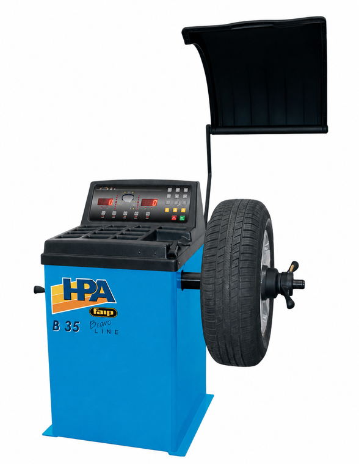

HPA-Faip
Digital Wheel Balancer — B35
| Rim diameter (measurable) | 10″–24″ |
| Rim width range | 1.5″–20″ |
| Max wheel diameter | 44″ (with guard) |
| Max wheel weight | 65 kg |
| Spinning speed | 200 rpm |
| Unbalance accuracy | 1 g |
| Shaft diameter | 40 mm |
| Noise level running | < 70 dB (A) |
| Power absorption | 250 W |
| Machine weight (net) | 107 kg |
| Machine weight (gross) | 137 kg |
| Supply voltage | 230 V · 1 Ph 50 Hz |
| Quantity per 20′ container | 34 sets |